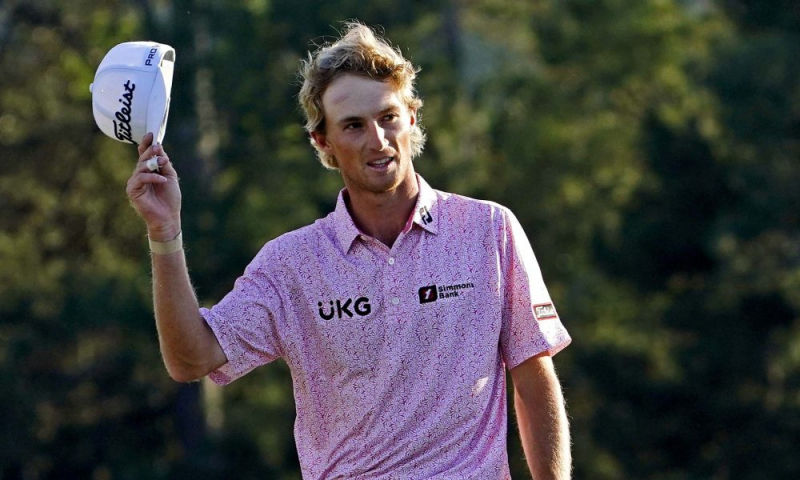

Từ Korn Ferry Tour, Will Zalatoris vào PGA Tour 2020-2021 theo diện mở rộng rồi cuối mùa đoạt thẻ chính thức và ẵm danh hiệu “Tân binh xuất sắc” hôm 13/9.
"Thay mặt PGA Tour, tôi chúc mừng Will Zalatoris trở thành chủ danh hiệu Tân binh xuất sắc", thông báo từ PGA Tour dẫn lời Đặc phái viên Jay Monahan. "Will mùa rồi chưa là thành viên chính thức nhưng khẳng định tài năng và tinh thần phấn đấu bằng những kết quả đáng ngưỡng mộ".
Giải thưởng dành cho Zalatoris - đấu thủ đạt thành tích nổi bật trong mùa chào sân - được quyết định bằng kết quả bỏ phiếu nội bộ thành viên PGA Tour. Ảnh: Twitter / PGA Tour
Zalatoris dự 25 sự kiện, trong lịch đấu đến 50 chặng, ở PGA Tour mùa vừa qua. Anh tám lần cán đích top 10, trong đó điểm sáng nhất là á quân major Masters. Ở sự kiện danh giá này, chỉ Zalatoris đạt điểm âm suốt bốn vòng Augusta National, par72.
Trung bình, Zalatoris đánh 70,065 gậy mỗi vòng, đứng 23 về khoảng cách phát bóng 307,4 yard, đứng thứ 17 khoản lên green theo chuẩn – xấp xỉ 70% qua 1.566 hố ở 1.089 hố, thứ 7 về số eagle (16 lần).
Sau giải, Zalatoris tiếp tục tranh PGA Tour bằng suất từ nhà tài trợ, nhưng giới hạn số lần. Và chỉ trong hai tháng bị hạn chế quyền lợi, golfer Mỹ lấy được thẻ thành viên tạm thời diện đặc biệt (STM), từ đó thoải mái nhận vé từ "mạnh thường quân". Lần gần nhất PGA Tour trao danh hiệu "Tân binh xuất sắc" cho đấu thủ STM là từ cách đây hai thập kỷ - Charles Howell III hồi 2001.
Với 21 lần qua cắt loại, trong đó tám dịp về top 10, Zalatoris lĩnh 3,45 triệu USD, 1.296 điểm trên bảng FedEx Cup về lý thuyết cùng chiếc thẻ thành viên toàn thời gian mùa 2021-2022, khởi tranh từ 16/9. Nhưng vì chưa phải thành viên chính thức, điểm FedEx Cup của anh lại vô hiệu ở đoạn cuối – Northern Trust, BMW và Tour Championship quyết định chức vô địch toàn đấu trường cùng 15 triệu USD.
"Tôi ở nhà xem Patrick Cantlay và Bryson DeChambeau tranh BMW Championship qua sáu hố phụ rồi ngày cuối ở East Lake. Tôi tiếc vì cảm thấy mình đủ năng lực cạnh tranh mà phải ngồi ngoài cuộc. Nhưng luật chơi là thế. Chưa đủ điều kiện thì tiếp tục phấn đấu", Zalatoris nói Golf Digest nhân dịp ẵm giải "Tân binh xuất sắc" hôm 13/9.